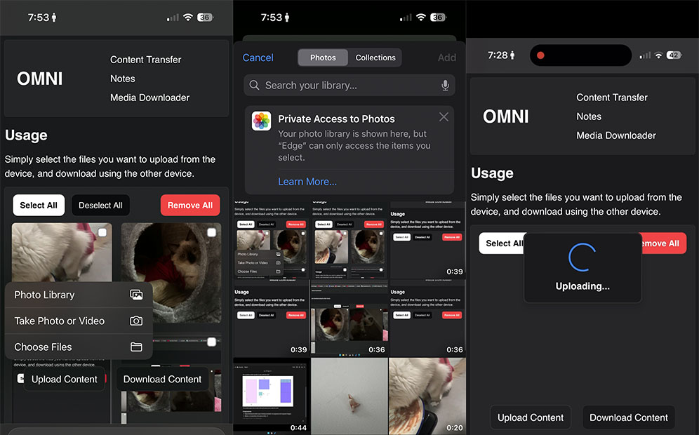
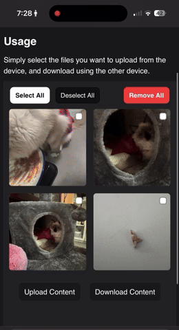
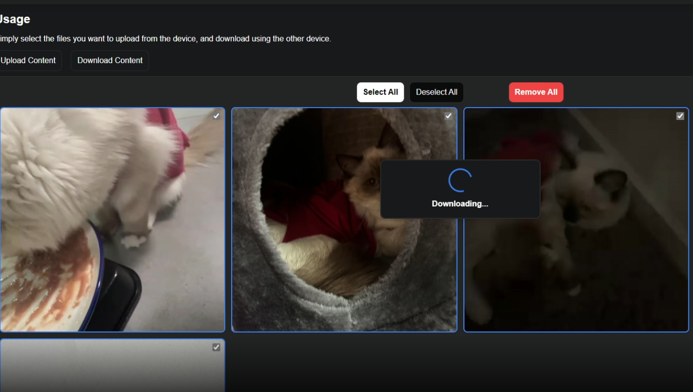

Omni - Content creation toolkit
Why
When trying to move content from my phone to my computer, I’ve always felt like it was a chore.
If you don’t have a fully Apple setup, you’d have to opt for google drive and google photos.
So I decided to create a web application, starting off as a local file transfer tool and expanding it to include:
Media downloader, Notes, Gif creator and much more…
How
- Deno
- Deno Fresh
- Tailwindcss
- FFmpeg
User uploads are stored directly onto the server’s storage. The website renders the content by fetching what’s inside the storage, thumbnails and gifs are then created via FFmpeg if they are non-existent. Keeping everything clean and fast.
Downloads are processed based on what the users selections are. Multiple selections are compressed into a zip file before download prompt, minimising user inputs and effectively improving the user experience.
Result
- 📁 A local file transfer system. No more sending your content onto another guy’s computer.
- 📶 File upload and Download with visual prompts
- ✅ Easy selection/deselection
- 🖼️ Automatic thumbnail generation for both videos and images. Videos are coupled with a gif for fast preview.
- 🤐 Automatic zipping if downloading multiple files.
Omni is going to be much more. This is just a part of it.
Mobile upload using photos

- ✅ Multi-select is supported
- 🔃 Uploading indicator
On mobile, user can select media files from either their files, or their photos application.
Video previews

Video previews and thumbnails are done through generating both a thumbnail and a gif when files are uploaded.
The two are then overlayed and opacity is set based on hover. This greatly improves performance compared to using an embedded video file.
Downloads
The user can then download their selected files on the other device. Completing the transfer process.

If multiple files are selected, the tool will automatically compress the given files into a zip. Allowing the user to download all the files at once.